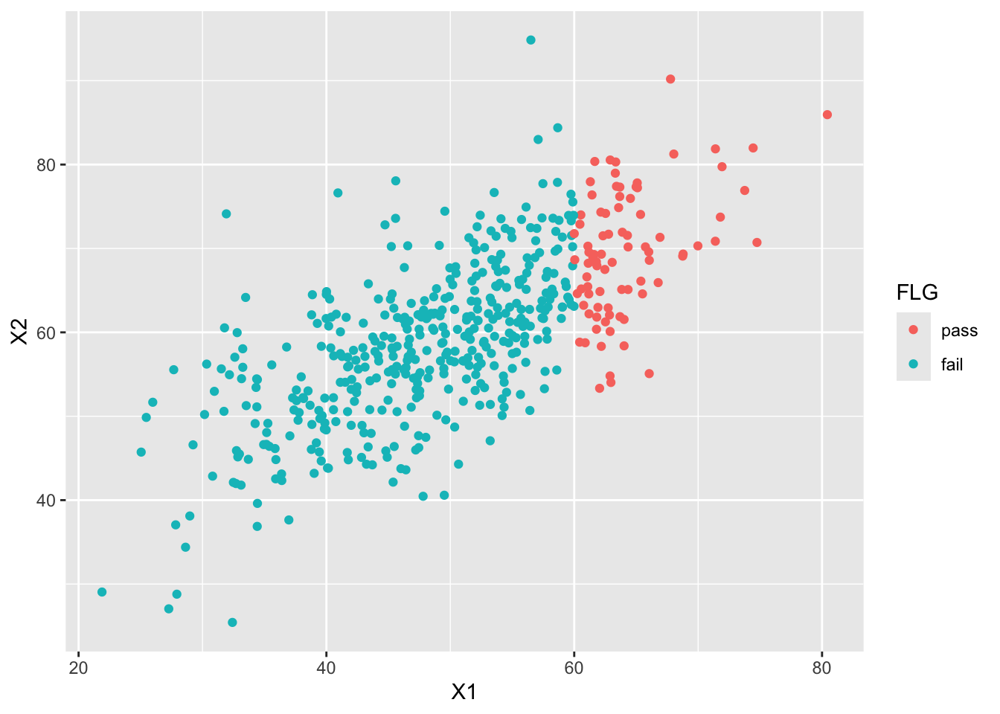

y <- c(151, 149, 152, 150, 151, 148, 151, 150, 221, 245)16 ベイジアンモデリング
ここまでは定型的な統計モデルをいろいろ紹介してきた。定型的といったのは，モデルの形や求めるパラメータの数，その解釈の仕方が決まっていて，データの種類や型に合えば適用できるモデルという意味である。これに対してベイジアンモデリングは，データに合う形のモデルを形作る＝モデリングするということであり，その推定方法としてベイズ法をつかうというものである。推定法は必ずしもベイズ法である必要はなく，最尤法でも最小二乗法でも良いのだが，これらの手法による推定は推定手順も自らで開発しなければならない。これに対し，すでにみた確率的プログラミング言語によるベイズ推定は，確率モデルさえ記述できれば推定結果が得られる。これにより，研究者は自らのデータとその背景に合ったモデルを考えて記述するだけでよく，テクニカルな推定手順を考える必要がなくなる。確率的プログラミング言語は，その言葉にあるようにプログラミングの知識を必要とするが，逆に言えばこの知識・技能さえ習得しておけば，あとは分析者のアイデア次第で、自身のオリジナルな分析ができる。
以下ではStanによるプログラミングと，その特徴的な利用例についてみていくが，その前にベイジアンモデリングを学ぶ上での指針を示しておく。
16.1 ベイジアンモデリングの学習方法
16.1.1 学習のステップ1;確率的プログラミング言語Stanの学習
ここではRを使った統計分析を扱ってきたので，改めてプログラミングとは，という話をする必要はないだろう。ただ，確率的プログラミング言語としてここで取り上げるStanは，Rよりもやや上級者向けの，C++と呼ばれる言語に基づいたものである。初学者にとって大きな違いは，「インタプリタ型とコンパイル型」，および「型宣言」の2点だろう。
16.1.1.1 インタプリタ型とコンパイル型
Rはインタプリタ型言語と呼ばれる。個人的には「一問一答型」と呼んでいる。コマンドプロンプト>が表示されている時，Rは入力を待って聞き耳を立てているのであった。ここに計算式や命令文を入れると，結果を計算して返す。つまり，問いに対して答えが返ってくる，という形式の繰り返しである。
これに対してコンパイル型言語というのがある。C言語やJava，Python，そしてStanはこの形である。すなわち，命令文全体をまず書いて，その文書(スクリプトファイル)全体を機械語に翻訳する。この作業をコンパイルという。コンパイルされたものを実行すると，その文書の内容が実行される。ここで命令文に誤りがある場合，1.コンパイルできないというエラーが表示される，2.コンパイルはできるが，実行時にエラーが表示される，という2つのケースがある。エラーは大抵，XX行目がおかしい，という形で表示される。インタプリタ型であれば，書いて実行した行でエラーだと言われるので気づきやすいが，コンパイル型は一旦書き切ってからでないとエラーかどうかわからないので1，不便に感じるかもしれない。
コンパイル型の利点は，一旦機械語に翻訳し，計算機は計算機自身の母語(機械語)で計算をするので，計算速度が速いという点にある。この利点のために必要なこととして理解して欲しい。また，コンパイルは専用のツールを使い，そのツールによってコンパイルされたものは，そのツールの環境でしか動かないという制約がある。Windowsの場合はRtools，Macの場合はcommand line toolsを導入する必要がある。これらは計算機のより根源的なところにアクセスする。一般的なアプリケーションを使うのとは違い，むしろMCMCサンプリングを行うアプリケーションを作るようなものだから，ウィルス対策ソフトがその実行を妨げるようなことがある。環境の構築はすでに済んでいるものとして話を進めるが，その準備に一苦労する可能性があることは覚えておくと良い。困ったことがあれば，自身で検索するなどして対応する必要があるだろう。
さて，Stanを使った分析では，Rファイルとは別に命令文全体をStanの言語で書いたStanファイルを準備することになる。このファイルをRの命令文で「Stanを使ってコンパイルせよ」と指示する。コンパイルが終われば，これまたR側から，「そのコンパイルされたオブジェクトを使ってMCMCサンプリングをせよ」と指示する。計算結果はRのオブジェクトとして環境に保存されるから，あとはRによるデータハンドリングの作業になってくる。StanファイルもRファイルもRStudioのエディタ機能を利用すれば良いが，両者を混ぜるようなことのないよう，この仕組みを理解して進めてほしい。
16.1.1.2 型宣言
聞きなれない言葉かもしれないが，型宣言とは，変数の型を宣言することである。例えば，int x;というコードがあったとき，intは整数型を表している。整数型は整数であり，xに代入可能なのは1.0(実数)でも1+0i(複素数)でもなく，1(整数)である。
このように，変数を使う前にその変数がどの型なのかを宣言することを型宣言という。このような型宣言は，コンパイル型言語では必須である。このように宣言しておくことで，本来整数しか入らないところに実数を入れてしまう，といったエラーが生じないように工夫されている。Rでは変数を事前に宣言する必要がなく，ただx <- 1と書き始めると，xが整数であれ実数であれ，自由に扱うことができた。このことに慣れていると，事前に宣言しなければならないことが非常に不便に思えるかもしれないが，型宣言をすることで言語の堅牢性を高めているという利点がある。
Stanはこの型宣言をブロックごとに行う必要がある。ブロックとは，中括弧{}で囲われる領域のことであり，次の6つのブロックがある。
- dataブロック
- transformed dataブロック
- parametersブロック
- transformed parametersブロック
- modelブロック
- generated quantitiesブロック
もっともよく使われるのは1.dataブロックと，3.parametersブロック，5.modelブロックである。dataブロックはStan外部とのやりとり，すなわちStanが外部から受け取るデータを宣言，記述するところである。ここで型が異なるデータが与えられるとエラーになる。すなわち，Stanの側でint x;と宣言してあるのに対し，R側からx <- 1.2のような実数が与えられると，実行時にエラーになる。このように，型宣言をすることで，エラーを防ぐものであると理解してほしい。
parametersブロックは推定したいパラメータを宣言するものであり，ここで宣言されたパラメータについて，Stanはサンプリング結果を返すことになる。modelブロックは確率モデルを記述するところ(尤度関数を記述するところ)であるので，もっとも重要なブロックであると言えるだろう。
そのほかのブロックは捕捉的なものであり，必ずしも使う必要があるわけではない。transformed dataブロックは，dataブロックで宣言されたデータを変換するところであり，transformed parametersブロックは，parametersブロックで宣言されたパラメータを変換するところである。なぜそのような変換をするかといえば，内部で以後の計算をやりやすくするためである。例えば複数のパラメータを組み合わせて，確率分布に与える場合は一旦返還しておいた方が可読性が高い。具体例として回帰分析のことを考えると，パラメータは切片\(\beta_0\)と傾き\(\beta_1\)であり，これが説明変数\(x_i\)と組み合わさって予測値\(\hat{y}_i\)を作るのであった。パラメータブロックには\(\beta_0\)と\(\beta_1\)を宣言するが，transformed parametersブロックでyhatを宣言して
\[ yhat = \beta_0 + \beta_1 x\]
とかいておくと，モデルブロックではyhatを使って記述できる。このように，あるパラメータがほかのパラメータの組み合わせで作られる場合などは，一旦その置き換えられる形を書いておいた方がわかりやすだろう。
generated quantitiesブロックは，サンプリングされた値を加工して使う場合に用いる。サンプリングされたものの加工は，結果を受け取ったRの側でも可能なので，このブロックは必ずしも必要ではない。しかし，サンプリングが終わった時に自分に必要な加工された値も(コンパイルして高速で)計算しておいてくれると便利である。他にも色々な用途があるので，このブロックに関しては続く実践例のところでみていこう。
16.1.1.3 そのほかの細かな違い
あとは，行の終わりにセミコロンをつける必要があるとか，コメントを書くときに//を使うとか，そういった細かなところが違うだけである。
プログラミングの基本は思った通りに動くのではなく，書いた通りに動くことである。もし思い通りにいかず，エラーが表示されれば，それもあなたが書いたコードに原因がある2。そのためエラーがでたら恐れ慄くのではなく，解決のためのヒントが表示されたぐらいに理解すれば良い。問題点を一つ一つ解決していけば，必ず望むところに到達できるはずである。最近は生成AIが発達しているので，エラーメッセージを丸ごと生成AIに与えて，どこにどのような問題があるかを聞くという方法があるので，それを利用すると良い。
16.1.2 学習のステップ2;これまでの分析方法を書き直してみる
ここまで様々な統計モデルを見てきた。ベイジアンモデリングの学習のステップ2は，これまでの分析方法をStanに書き直してみることである。
例えば回帰分析を，重回帰分析を，階層線形モデルをStanの言葉で書いたらどうなるだろうか。もちろんbrmsパッケージを使うとこうした苦労は必要ないのだが，改めて自分で既知のモデルを描いてみると，どのようなモデルがどのように記述されるかがわかるだろう。
この時のポイントは，分析に際してデータ生成メカニズムという視点を持つことである。我々はつい，データがあってそれに合う分析方法を探す，という発想になってしまう。あるいは分析方法のバリエーションがないばあい，分析方法に合うようなデータを取る，という考え方になってしまう。これはおかしなことだとは思わないだろうか。自分の購入した統計ソフトが回帰分析しかできないので，離散変数は諦めて研究計画を練り直そう，というのは大変貧しい話である。
本来，自然な人間の振る舞いや反応の仕方を数値におとして，そこから意味を読み取ることが統計学であり，予算や環境の問題で人間の振る舞いの方を変えさせるというのはおかしいのである。なるべくデータは生のままで，これをどのように分析するかを考えるべきである。その時，「このデータはどのようなメカニズムで生まれてきたのか」という視点からアプローチする。ここでのメカニズムは確率分布と言い換えても良いかもしれない。すなわち，個々の反応は確定した一つの値しか取らないわけがないので，その反応のあり得るほかの値をかんがえ，その総覧を確率分布として表現するのである。その上で，その確率分布が持つパラメータが，どのような仕組みを持っているかを数式で記述する。
回帰分析は，個々の値\(y_i\)が，本来取りうる値\(\hat{y}_i\)に誤差\(e_i\)がついて生じた，と考えている。この誤差は正規分布に従うから，\(y_i \sim N(\hat{y}_i, \sigma^2)\)と記述される。この\(\hat{y}_i\)は説明変数\(x_i\)の線形結合で表現されるから，\(y_i \sim N(\beta_0 + \beta_1 x_i, \sigma^2)\)とする，といった具合である。
回帰分析がこのようなメカニズムであったように，t検定や分散分析なども同様に記述することができる。こうした既存のモデルを改めて記述すると，これまで意識していなかったモデルの性質が見えてくる。例えば，確率分布として何を仮定していたのか，パラメータの制約として何をおいていたのか，事前分布として何を考えていたのか，といったことが，Stanの言語で逐一記述することでわかるようになる。これが，既存のモデルをStanの言語で書き直すことによる学習の利点である。
- 様々なモデルを試してみる
既存のモデルが確率的プログラミング言語で表現できることがわかれば，つぎは確率的プログラミング言語でないと表現できないことに目を向けてみよう。
例えばt検定や分散分析は「平均値の差の検定」である。ここで行われていたことは，正規分布に従うデータの，平均値の差があるかどうか，全ての群間に差がないと言って間違える可能性はどれぐらいあるか，ということであった。データ生成メカニズムの観点から見ると，この手法はごく限定的な一部分しか見ていなかったことに気づく。
平均値以外のパラメータを考えることはできないのだろうか。特定の群間の差だけを考えることはできないのだろうか。差があるかないかだけではなく，どれぐらい差があるのかとか，一方が他方より大きい確率はどれぐらいか，といったことを考えることはできないのだろうか。
これらの疑問に対して，ベイジアンモデリングは答えを与える。実験計画法によって得られたデータであっても，これまで以上に多角的な視点，様々な仮説を持って考えることができる。
もちろん実験計画法による要因効果の特定だけがベイジアンモデリングではない。正規分布ではないデータに対しても，特定の離散的な区別をしていないデータに対しても，データ生成の観点からモデルを組み込んでいくことができる。以下ではこうした例をいくつか見ていくが，これらを見ることで統計分析の視点が一変することを感じてほしい。統計分析は，与えられたデータに既存の分析を制約の中で考えるのではなく，データの生成メカニズムをクリエイティブに考える楽しい営みなのである。
- 限界について知っておこう
ベイジアンモデリングの自由さ，創造性に目覚めてしばらくすると，その限界に気づくこともあるだろう。まずは楽しんでいってほしいというところだが，先にどのような壁に直面しがちなのか，みておこう。
一つはモデル評価の問題である。例えば帰無仮説検定の場合，これは評価・判断をするための技術であるから，「設定した有意水準を下回る\(p\)値を得れば差があると言って良い」といった評価基準が明確であった。これに対して，ベイジアンモデリングを行うと，こうした「YesかNoか」といった答えは出しにくい。帰無仮説と対立仮説というモデル，あるいは自分が開発したモデルが既存のモデルに比べて，良いのか悪いのかといった判断基準をどう持てば良いのか。
これについての答えは明確で，ベイズファクター(Bayes Factor)をみよ，というのがそれである。ベイズ的モデル評価はこのBFに一元化できるといっても過言ではない。BFはモデルとデータの当てはまりの良さを，モデル同士の相対比較で表現するものであるから，対立仮説よりも帰無仮説のほうが良い，という結論を出すこともできる。ただし，この「当てはまりのよさ」(周辺対数尤度)を計算するプロセスが少し複雑で，またモデルによっては解析的に計算できず推定するしかないこともある3。この点については，今後の計算機科学の発展が望まれる。
t検定や分散分析など，定型的なモデルについてはBFを自動的に算出してくれるパッケージやアプリケーションがある。JASP(JASP Team 2025)はその代表的なもので，GUIを備えた統計ソフトウェアでありながら，既存の分析結果と同時にベイズ推定の結果も出力し，BFも自動的に計算してくれる。
ただし，BFも「3.0より大きければ優っていると判断して良い」という数値基準もあるが，こうした「YesかNoか！」という二値判断が，過大な解釈を許したり基準を超えるための不正を生んだりしてきたという歴史を鑑みると，使い方には注意が必要である。またBFは事前分布の置き方によっては同じモデルでも大きく値を変えることが知られており，客観的な事前分布の置き方については様々な議論がある。
BFを離れてモデルを評価するのであれば，得られた事後分布やパラメータを見て色々判断するしかないだろう。Kruschke (2018) は事前に判断するパラメータの領域を宣言しておく方法を考えているし，豊田 (2020) は事後分布の関数の形で判断する方法を提示したりしている。これらは帰無仮説検定に対する代案として提示されているものである。今後どのような形で議論が進むのか，まだ確定していないというのが現状である。
モデルの評価はBFでできるとして，次に初学者が直面する問題は，「自分でモデルを作るのが難しい」というものである。以下に続く様々なモデルはどれも魅力的であるが，自分では思いつかないよ，と思って挫けそうになるという相談をよく耳にすることがある。これについては特効薬があるわけではないが，そもそもゼロから全てのモデルを作り上げよう，とするのが大きすぎる野望のように思われる。まずは色々なモデルを知って，このモデルを自分のデータにはこのように応用できそうだ，と想像力を働かせるところから進めよう。あるいは非常に限定的な，小さなおもちゃのようなモデル(Toyモデル)を作って，それを徐々に発展させていくことで大きなモデルに育てる，という観点を持つことである。浜田 (2018) や 浜田 (2020) を読むと，このステップの重要さがよくわかるだろう。
そもそも，線形モデルでも十分なシーンというのも結構あるものである。ベイジアンモデリングで自分似合ったデータをカスタマイズする，と豪語しておいた後で言うのもおかしいが，はっきりした傾向があるのであれば線形モデルで大体うまくいく。線形モデルはピッタリとは言わないが大体当てはまっていて理解できるモデルであり，モデリングは細かな違いに当てはめていこうとする「作り込み」の技術であるから，実践的にはそこまで必要のないことも少なくない。もちろん線形モデルといってもただの単回帰分析で良い，といってるのではなく，データの生成メカニズムにあった一般化線形モデル，混合モデルなど工夫できるところは色々あるのだから。
こうした問題やぶつかりそうな壁があると知ってもなお，ベイジアンモデリングはおすすめできる。この自由で創造的な世界を知らずして，統計分析が苦手だと思ってしまうのは非常にもったいないからである。以下の用例で，ベイジアンモデリングの様々な可能性を味わっていただきたい。
16.2 正規分布を使ったモデル
まずはこれまでもよく用いられてきた，正規分布を使ったモデルについて見てみよう。
16.2.1 分散を推定する
正規分布を使ったモデルといえば，一般線形モデルのような平均値に関するモデルがほとんどである。正規分布は位置パラメータ\(\mu\)と，スケールパラメータすなわち幅のパラメータ\(\sigma\)でその形状が定まるが4，後者はブレの大きさ，誤差の大きさに関するものと考えられるから，そうした指標としてモデルを考えてみよう。
カバーストーリーとして次のようなシーンを考える5。 ある牛丼チェーン店では，並盛り一人前につき150gの肉を載せて提供すること，という決まりになっている。ここである店舗で社員による抜き打ち検査があり，提供係10名に牛丼を作らせ，その肉の量を計測した。10名のうち2名はまだ日の浅いアルバイトであることがわかっている。計測した肉の量は以下の通りであった。
ここから次のようなモデルを考えよう。全員平均\(\mu=150\)のつもりで提供しているが，誤差が個人ごとに異なるものとする。これを数式で次のように表現する。
\[ y_i \sim N(\mu, \sigma_i) \]
添字を注意深く見るとわかるが，個人を識別する\(i\)がデータ\(y_i\)と標準偏差\(\sigma_i\)についていて，平均値\(\mu\)にはついていない。つまり平均値は全員で共通していると仮定し，そこからのブレが個人ごとに違うというモデルになっている。
これがデータ\(y_i\)を生成するデータ生成メカニズムである。ここでの未知数\(\mu,\sigma_i\)をデータから推測するために，StanによるMCMC法を用いる。Stanのコードは次のようになる。このコードを，例えばgyudon10.stanとでも名前をつけて保存しておこう。
data{
int N;
array[N] real Y;
}
parameters{
real mu;
array[N] real<lower=0> sigma;
}
model{
// likelihood
for(i in 1:N){
Y[i] ~ normal(mu, sigma[i]);
}
// prior
mu ~ uniform(0, 200);
sigma ~ cauchy(0,5);
}コードがdataとparameters，modelの3つのブロックに分かれていることに注意してほしい。また，各ブロックでintやarrayなどの型宣言があることに注意してほしい。
まずはdataブロックを見よう。intは整数型で，まずデータのサイズを外部から入力するようにしている。これで，例えばデータが7件とか50件と変わった時でも同じコードが使えるようにしている。またarrayは配列の型宣言であり，同じ変数名で複数の値が入るようになっている。ここではN人分のデータを扱うためにarray[N] real Y;というように宣言している。
続くparamtersブロックでは，知りたい未知数の\(\mu\)と\(\sigma_i\)をそれぞれreal mu;とarray[N] real<lower=0> sigma;としている。realは実数型，arrayはすでに述べたように配列で，\(\sigma_i\)の\(i\)によって異なる\(\sigma\)である様を表現している。<lower=0>としているのは変数に対する制約で，この\(\sigma_i\)は下限が\(0\)，すなわち正の数しかとらないことにしている。分散は負になることがないので，こうしておくとStanがMCMCサンプリングにおいて可能な値の候補を探す領域が適切に制限されることになる。
最後のmodelブロックは，確率モデルを記述する。ベイズ的確率モデルは尤度と事前分布が必要で，まず尤度を記述している。 Y[i] ~ normal(mu, sigma[i])のところがそれで，\(i\)がfor文によって繰り返されている。数式で言えば，次の計算と同じである。
\[ \prod_{i=1}^{N} N(Y_i | \mu, \sigma_i) \]
実際の計算は対数尤度をとって，次の計算を行っているが，Stanでは「データが次の確率分布に従う」という形で書けるので，確率分布を使ったモデルさえかければ誰でも推定ができる。
\[ \sum _{i=1}^{N} \log\{N(Y_i | \mu, \sigma_i)\} \]
また今回はそれぞれの事前分布として，\(\mu\)に\(0\)から\(200\)までの一様分布を，\(\sigma\)にコーシー分布を置いた。どのような事前分布をおくかは自由だし，特段指定がなければStanは十分にひろい一様分布を自動的に設定する。分散(標準偏差)パラメータの事前分布には裾の重い分布をおくことが一般的で，コーシー分布やStudentのt分布，指数分布などがよく用いられる。
さてこのコードを，次のRコードから呼び出して実行する。手順は(必要なライブラリを読み込んだ上で)，stanファイルをコンパイルし，できたオブジェクトにサンプリングの設定を与えて出力する，というものである。
サンプリングに際してはデータを外部から与える必要があるため，dataSetオブジェクトを作って渡すようにした。与えるデータはリスト型であり，stanファイル側のdataブロックと同じ変数名をつける必要がある。サンプリングのその他の設定は次のとおりである。
data…データを与えるchains…MCMCチェインを走らせる数parallel_chains…MCMCチェインのうち，並列で走らせるチェインの数。実行環境のCPUが持っているコア数-1程度にするのが良い。iter_warmup…サンプリングに入る前の調整期間。詳しくは@sec-mcmc-evaluation を参照iter_sampling…サンプリングの数。詳しくは@sec-mcmc-evaluation を参照show_message…メッセージの出力を抑制。必ずしも設定しなくても良い。reflesh…サンプリングの途中経過をどの程度の頻度で出力するかの設定。必ずしも設定しなくとも良い。
pacman::p_load(cmdstanr)
model <- cmdstan_model("gyudon10.stan")
dataSet <- list(
N = length(y),
Y = y
)
result <- model$sample(
data = dataSet,
chains = 4,
parallel_chains = 4,
iter_warmup = 2000,
iter_sampling = 5000,
show_messages = FALSE,
refresh = 0
)Warning: 2178 of 20000 (11.0%) transitions ended with a divergence.
See https://mc-stan.org/misc/warnings for details.print(result) variable mean median sd mad q5 q95 rhat ess_bulk ess_tail
lp__ -18.66 -18.32 2.26 2.12 -22.85 -15.61 1.00 2218 2134
mu 150.58 150.77 0.64 0.51 149.45 151.38 1.00 2677 5602
sigma[1] 2.83 1.41 6.61 1.59 0.07 9.25 1.02 138 58
sigma[2] 4.89 2.97 10.33 2.35 0.75 13.24 1.00 1907 5759
sigma[3] 4.50 2.61 10.04 2.09 0.63 12.92 1.01 463 192
sigma[4] 3.24 1.82 5.68 1.66 0.23 10.19 1.00 4359 3287
sigma[5] 2.75 1.38 10.16 1.59 0.08 9.10 1.01 461 255
sigma[6] 6.11 4.01 11.58 2.77 1.37 15.69 1.01 762 5712
sigma[7] 2.98 1.41 11.08 1.60 0.10 9.76 1.01 430 221
sigma[8] 3.32 1.74 8.31 1.62 0.20 10.52 1.00 2190 2031
# showing 10 of 12 rows (change via 'max_rows' argument or 'cmdstanr_max_rows' option)結果を見ると，\(\mu\)は平均して150程度であり，店舗マニュアルに沿った結果が出ているといえよう。注目すべきは個々人の誤差であり，可視化してみるとその特徴がわかりやすい。
pacman::p_load(bayesplot)
draws <- result$draws()
# sigmaパラメータのみを可視化
bayesplot::mcmc_areas(draws, regex_pars = "sigma")
これをみると明らかなように，最後の2人が大きな値であり，明らかに未熟であることがわかる。 数値で出力するために，bayestestRパッケージの力も借りてみよう。
pacman::p_load(bayestestR)
# sigmaパラメータのみを選択
sigma_draws <- draws[, , grepl("sigma", dimnames(draws)$variable)]
# EAP(平均), MAP(最頻値), 中央値, 95%HDI
bayestestR::describe_posterior(sigma_draws, centrality = c("mean", "median", "MAP"),
ci = 0.95, ci_method = "hdi", test = NULL)Summary of Posterior Distribution
Parameter | Median | Mean | MAP | 95% CI
-----------------------------------------------------
sigma[1] | 1.41 | 2.83 | 0.41 | [ 0.03, 9.26]
sigma[2] | 2.97 | 4.89 | 1.75 | [ 0.04, 13.24]
sigma[3] | 2.61 | 4.50 | 1.53 | [ 0.08, 12.92]
sigma[4] | 1.82 | 3.24 | 1.00 | [ 0.04, 10.20]
sigma[5] | 1.38 | 2.75 | 1.09 | [ 0.02, 9.10]
sigma[6] | 4.01 | 6.11 | 2.55 | [ 0.42, 15.97]
sigma[7] | 1.41 | 2.98 | 1.23 | [ 0.03, 9.76]
sigma[8] | 1.74 | 3.32 | 0.55 | [ 0.04, 10.53]
sigma[9] | 59.32 | 91.72 | 50.40 | [19.80, 221.95]
sigma[10] | 78.23 | 114.19 | 60.14 | [25.21, 276.25]ここにあるように，結果は確率分布の形で得られるので，平均値(Mean, EAP)でみるのか，中央値(Median)でみるのか，密度が最大になるところ(MAP)でみるのかによって大きく値が異なる。特に分散パラメータは左右対称ではなく歪んだ分布になるので，EAP推定値は適切ではない。 また，確信区間は今回HDIを指定した。HDIはHighest Density Intervalsの略で，最高密度を含む95%の領域を指す。いわゆるパーセンタイルのように，上下2.5%を除外した領域を取る方法はETI(Equal-Tailed Intervals)と呼ばれるが，これだと歪んだ分布に対してやや偏った結果になることがある。詳しくは クルシュケ ([2014] 2017) や Makowski, Ben-Shachar, and Lüdecke (2019) ，あるいは単にbayestestRのサイトを参照して欲しい。
さて，ともあれこのように幅のパラメータを推定するモデルを描くことができた。今回はたった10件の数字でもモデリングができること，平均パラメータ以外もモデリングの対象になることを確認してもらいたい。心理学において，特に反復測定を行う場合の個人の分散は，その人の持っている精度・誤差の大きさを表すと言える。今回のようにこの幅が，熟練度と解釈できるようなシーンであれば，立派に解釈可能なパラメータである。例えばこの\(\sigma_i\)に，経験日数\(z_i\)をつかって\(\sigma_i = \beta_0 + \beta_1 z_i\)のようなモデリングをすれば，どの程度経験によって誤差がなくなっていくかといった意味のある考察もできるだろう。このように，心理学において考察できるパラメータは平均だけではなく，我々は自由にその発想で考えることができるということを味わってもらいたい。
16.2.2 欠測のあるデータを有効に使う
続いては相関係数のモデリングを見てみよう。 例えば大学の入試の成績と，入学後の成績の間にはそれほど高い相関が見られない，という現象がある。 これは大学の入試が適切に学力を測定していない，という問題ではなく，いわゆる「選抜効果」とよばれるものだ。大学に入学できているのは一定のスコアを超えた者だけなので，得られたデータが本来の「入試の成績」の情報を含んでいないという問題である。
具体的に数字で見てみよう。まずある程度の相関関係を持つデータを作り，その一部を欠損させてみよう。
pacman::p_load(MASS,tidyverse)
N <- 200
mu <- c(50,60)
sd <- c(10,10)
rho <- 0.7
Sig <- matrix(nrow=2,ncol=2)
Sig[1,1] <- sd[1]*sd[1]
Sig[1,2] <- sd[1]*sd[2]*rho
Sig[2,1] <- sd[2]*sd[1]*rho
Sig[2,2] <- sd[2]*sd[2]
# 乱数の発生
set.seed(17)
X <- mvrnorm(N,mu,Sig,empirical=T)
dat <- data.frame(X)
dat$FLG <- factor(ifelse(dat$X1>60,1,2),labels=c("pass","fail"))
# 描画
g <- ggplot(dat,aes(x=X1,y=X2,group=FLG,color=FLG)) + geom_point()
g
ここでは60点以上の者が入学したとして切断してみた。この場合の相関係数を，欠測値を除くuse=complete.obsのオプションをつけて確認しておく。
# フルデータの場合
cor(dat$X1, dat$X2)[1] 0.7# 欠測値に置き換える
dat[dat$FLG=="fail",]$X2 <- NA
# 改めて相関係数を算出
cor(dat$X1, dat$X2, use="complete.obs")[1] 0.2493492不合格者が欠測値だとすると，相関係数は0.249にまで落ちてしまった。
さてこれをベイジアンモデリングでできるだけ補正してみよう。コードは次のようなものになる。
data{
int<lower=0> Nobs;
int<lower=0> Nmiss;
vector[2] obsX[Nobs];
array[Nmiss] real missX;
}
parameters{
vector[2] mu;
real<lower=0> sd1;
real<lower=0> sd2;
real<lower=-1,upper=1> rho;
}
transformed parameters{
cov_matrix[2] Sig;
Sig[1,1] = sd1 * sd1;
Sig[1,2] = sd1 * sd2 * rho;
Sig[2,1] = Sig[1,2];
Sig[2,2] = sd2 * sd2;
}
model{
//likelihood
obsX ~ multi_normal(mu, Sig);
missX ~ normal(mu[1], sd1);
//prior
mu[1] ~ uniform(0,100);
mu[2] ~ uniform(0,100);
sd1 ~ cauchy(0,5);
sd2 ~ cauchy(0,5);
rho ~ lkj_corr(1);
}このコードでは，まずデータブロックでNobsとNmissという二つの整数値をとっている。これは2つの変数が両方とも観測されたケースの数と，一方が欠測値であったケースの数である。StanではNAを直接扱うことができず，有効なデータの数だけ渡す必要があり，冒頭にその数を明示しておいた。
次にvector型でobsX[Nobs]を宣言している。vector[2]とあるのは2つの要素を持つベクトルで1セットの変数であることを意味し，それがNobs個あることを表している。最後に，一方の変数が欠落していたデータも活用するために，Nmiss個の配列変数を用意した。こちらはベクトルではなく，サイズをしていした実数の配列の扱いである。
今回推定したいのは相関係数rhoだが，これは2次元の多変量正規分布を想定した時の分散共分散行列の中に現れる。尤度のところにあるように，平均ベクトル\(\mathbb{\mu}\)と，分散共分散行列\(\mathbb{\Sigma}\)からデータは生成されている。
\[ obsX \sim MN(\mathbb{\mu},\mathbb{\Sigma})\]
ここで分散共分散行列の要素を紐解くと， \[ \mathbb{\Sigma} = \begin{pmatrix} \sigma_1^2 & \sigma_{12}\\ \sigma_{21} & \sigma_2^2 \end{pmatrix} = \begin{pmatrix} \sigma_1^2 & \sigma_1 \sigma_2 \rho \\ \sigma_1 \sigma_2 \rho & \sigma_2^2 \end{pmatrix}\]
となる。ここで\(\sigma_1, \sigma_2\)はそれぞれの変数の標準偏差であり，\(\rho\)は相関係数である。
16.3 正規分布以外の分布を使う
16.3.1 項目反応理論
16.3.2 再捕獲法による全体の推論
16.4 分布を混ぜる
16.4.1 分布を混ぜる(変化点を検出する)
16.4.2 分布を混ぜる(0過剰ポアソン分布)
エディタがその言語に対応していたら，おかしな記述に下線が引かれるなど注意を促してくる機能もある。またRStudioでStan言語を書いていると，コンパイルの前に文法のチェックをする機能もある。↩︎
とはいえ，コードに原因がない場合もある。それはStanを導入する際のシステム的なエラーであり，書かれた内容ではなく動かす環境全体の問題である。解決策としては，表示されるエラーを解読して問題を解決するか，環境を再構築する(Stanを再インストールする，最新バージョンに入れ替える等)必要がある。この場合も，生成AIが助力してくれるだろう。↩︎
詳しくは(浜田, 石田, and 清水 2019)を参照してほしい↩︎
正規分布の幅のパラメータは，テキストによっては分散\(\sigma^2\)で記載されていることが多いが，ここでは標準偏差\(\sigma\)で記述する。Stanでは標準偏差で記述するようになっているので，それに合わせたいからである。標準偏差を二乗したものが分散であるから，意味するところは本質的に変わりがない。↩︎
このカバーストーリーとモデルは リー and ワゲンメーカーズ ([2013] 2017) の「七人の科学者」P.48–49を参考に作ったものである。↩︎